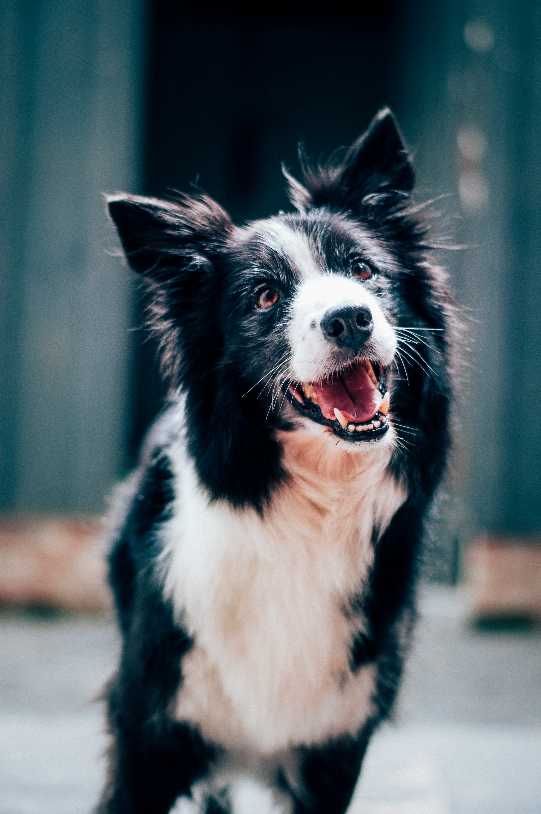

Give a Furry Friend a Second Chance
Every year, thousands of animals are abandoned and left without hope. At Paws & Whiskers Rescue, we believe every animal deserves a loving home.

Adopt | Donate | Volunteer
Our Mission
To rescue, rehabilitate, and rehome abandoned and abused animals while promoting responsible pet ownership through community education and outreach (Humane Society of South Africa, 2023).
Our Impact
- 1,200+ animals rescued and rehomed since 2018 (Humane Society of South Africa, 2023)
- 150+ active volunteers (Animal Welfare South Africa, 2022)
- 95% successful adoption rate
- 50+ community education events held